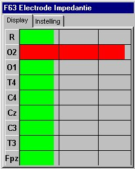
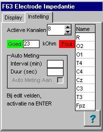

RF 2, Onset Systolische Bloeddruk
|
Deze functie meet de elektrode impedantie van1 of meerdere kanalen. Met name bij EEG-metingen is het wenselijk/noodzakelijk om vooraf, achteraf en zo mogelijk op regelmatige tijdstippen tussendoor, de impedantie te meten en vast te leggen.
Voor het meten van de elektrode-impedantie moet de FysioFlex voorzien zijn van een special voor dit doel geschikte generator. Deze generator stuurt kleine stromen (<10 nA) afwisselend door de individuele meetelectroden en door de common-electrode. De impedantie van de aard-electrode (of beter gezegd de DRL-electrode) kan niet worden gemeten, deze heeft echter geen invloed op het signaal, enkel op de onderdrukking van common-mode storingen. Dus is de storing op alle kanalen te hoog, dan is mogelijk de aard-electrode impedantie te hoog.
minimale sample-frequentie 50 Hz (20 Hz doet het nog wel, maar wordt niet gegarandeerd.
versterker gain moet in de hoogste stand staan (2 mVtt)
tijdconstante van het hoogdoorlaat filter moet minstens 1 seconde bedragen
|
Bovenaan wordt altijd de impedantie van de centrale electrode weergegeven. Hieronder volgen de impedanties van signalen in de volgorde waarin ze in de rekenfunctie zijn ingevoerd. De totale breedte van de meetbalken is ongeveer 1.5* de maximaal ingestelde impedantie-waarde. Er zijn 2 vaste vertikale meetstrepen, één op 50% van de maximale ingestelde impedantie-waarde en en één op 100% van de maximaal ingestelde impedantie-waarde. De kleur van de meetbalk verandert als de 70% lijn wordt overschreden, kleuren kunnen vrij worden ingesteld. Het venster is vrij te verplaatsen en te schalen. Als gedurende 3 seconden geen impedantie detectie wordt waargenomen, worden alle impedantiewaarden 0 gemaakt. |
 |
|
Het aantal actieve kanalen, stelt enerzijds het aantal meetbalken in het weergave venster in en anderzijds wordt hiermee de impedantie van de centrale electrode gekalibreerd. Door op "goed" of "fout" te klikken, kan de kleur van de balk onder respectievelijk boven de maximale impedantie worden ingesteld. In het edit-veld ertussen kan de maximale impedantie in kOhm worden ingegeven. In de rechter kolom kunnen korte namen van de signalen worden ingegeven. De instellingen voor Automatisch meting zijn niet geïmplementeerd. |
 |
Momenteel is voorzien in maximaal 8 ingangen. Op verzoek kunnen deze worden uitgebreid.
Het aantal ingangskanalen dat actief geanalyseerd wordt, kan worden ingesteld. Er wordt altijd vanaf ingangskanaal 1 gestart en er wordt een aaneengesloten reeks van kanalen geanalyseerd. Niet gewenste ingangskanalen moeten wel van een of ander signaal worden voorzien.
|
1 .. 8 = Signaal 1.. 8 |
ingangssignalen |
|
1 = Filtered sum 2 = Afgeleide 3 = Impedantie Common 4 = Impedantie signaal 1 5 = Impedantie signaal 2 ... 11 = Impedantie signaal 8 |
Som van alle actieve ingangssignalen, laagdoorlaat gefilterd Afgeleide van de som, gebruikt voor encoding van het modulatie signaal Impedantie van de common electrode Impedantie van kanaal 1 |
1 = vensterpositie en formaat
2 = weerstandsinstellingen
3 = kleuren
4 = namen
5 = auto eiegenschappen
De generator genereert het volgende signaal
© Copyright Instrumentele Dienst
SM/GvV, 20-3-1998